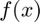

Введение в Matlab
Семинар №1, 6 сентября 2023г.
Contents
Контакты
Шемендюк Александр Андреевич , аспирант Университета Лозанны
email : alex.shemendyuk@gmail.com
Smart LMS : https://edu.hse.ru/course/view.php?id=162488
GitHub: https://github.com/AlexShem/advanced_calculus_2023
Установка Матлаба
Информация по установке Матлаба для студентов НИУ ВШЭ доступна по ссылке: https://matlabsupport.ru/
Шпаргалки (CheatSheats) по Матлабу: на русском, на английском.
Запуск и настройка
Настройки Матлаба досупны в разделе Preferences.

Самые практичные разделы:
- Display : для удобного отображения окна с кодом
- Fonts : для изменение размера шрифта

Переменные и операции над ними
Создадим две переменные и проведем некоторые операции над ними.
a = 2; % Этот знак используется для комментариев b = pi; % Число $\pi$ a + b b/a sqrt(a) disp(a^5)
ans =
5.1416
ans =
1.5708
ans =
1.4142
32
Вектора и матрицы
Вектора могут быть строками и столбцами
a = [1, 2, 3] % Вектор строка b = [1; 4; 7] % Вектор стобец
a =
1 2 3
b =
1
4
7
Вектора можно создавать несколькими способами:
a = 1:3; % Вектор строка, элементы от 1 до 3 с шагом 1 b = 1:3:7; % Вектор строка, элементы от 1 до 7 с шагом 3
Матрица задается похожим способом, используя , и ; .
A = [1 3; 2, 4]
A =
1 3
2 4
Индексация номеров элементов в Матлабе начинается с 1 . Поэтому, чтобы "достать" 2ой элемент вектора b, мы пишем
b(2) % Должно быть равно 4
ans =
4
Другие варианты:
b(1:2) % С 1го по 2ой элементы вектора
ans =
1 4
b([1, 3]) % Конкретно 1ый и 3ий элементы вектора
ans =
1 7
b([true, false, true]) % Логический вектор должен быть такого же размера, что и сам вектор b
ans =
1 7
Для матриц появляется второй аргумент для индексации. Вытащим элемент матрицы A
A
A =
1 3
2 4
который стоит на 2ой строке на 1ом столбце
A(2, 1)
ans =
2
A(1, :) % 1ая строка, все столбцы
ans =
1 3
A(:, 2) % все строки, 2ой столбец
ans =
3
4
A(1, 1:2) % 1ая сторка, столбцы с 1го по 2ой
ans =
1 3
Удаление переменных
Используйте команду clear , чтобы удалить все переменные из рабочего пространства ( Workspace ).
whos % Отобразяться все доступные переменные clear % или можно: clear all whos % Переменных больше нет, отображаться нечему
Name Size Bytes Class Attributes A 2x2 32 double a 1x3 24 double ans 1x2 16 double b 1x3 24 double
Команда clc очищает коммандное окно ( Command Window )
clc
Комплексные числа
Инициализация комплексных чисел
z_1 = complex(2, 3) % Re(z_1) = 2, Im(z_1) = 3
z_2 = 3 + 4i
z_3 = 2*exp(1i * pi/3)
z_1 = 2.0000 + 3.0000i z_2 = 3.0000 + 4.0000i z_3 = 1.0000 + 1.7321i
Модуль и аргумент комплексного числа
% num2str(z) -- трансформирует число z в формат "строка" disp(['Модуль z_3: ' num2str(abs(z_3))]) disp(['Аргумент z_3: ' num2str(angle(z_3))]) disp(['pi/3 = ' num2str(pi/3)])
Модуль z_3: 2 Аргумент z_3: 1.0472 pi/3 = 1.0472
График многочлена
Пусть задан многочлен степени 
где , см. создание и вычисление многочленов. Необходимо построить его график на заднном сегменте .
Рассмотрим на отрезке . Для этого создадим равномерную сетку х (т.е. с постоянным шагом) от -1 до 1.5 используя linspace, и вычислим значения многочлена в каждой из этих точек с помощью polyval.
p = [3 -2 -1 0]; % задаем коэффициенты многочлена x = linspace(-1, 1.5, 101); % linspace(from, to, num_of_points) P = polyval(p, x); % polyval(polynomial, at_what_points) figure(1); % Открываем окно, в котором будем рисовать график plot(x, P); % Рисуем линию xlabel('x'); % Подпись к оси ОХ legend('P_3(x) = 3 x^3 - 2 x^2 - x'); % Добавляем легенду
Замечание: коэффициенты многочлена могут быть комплексные. Найдем корни многочлена с помощью функции roots.
p = [1 -2i 3]; z = roots(p) sum(z) % Сумма всех элементов prod(z) % Произведение всех элементов
z = 0.0000 + 3.0000i 0.0000 - 1.0000i ans = 0.0000 + 2.0000i ans = 3.0000 + 0.0000i
График произвольной функции
Требуется построить график заданной функции  (пусть она непрерывна на множестве ).
В таких случаях мы таким же образом создаем сетку на множестве и вычисляем значения функции в этих точках.
Рассмотрим функцию на отрезке .
x = linspace(-1, 1, 101); f = 1 - x.^2; figure(2); plot(x, f); xlabel('x'); ylabel('y'); legend('f(x) = 1 - x^2');
Числа Фибоначчи
Числа Фибоначчи задаются реккурентным соотношением

и начальными условиями для .
Построим график для первых 10 её членов.
N = 10; % Итоговое количество членов последовательности n = N - 1; % Индекс n из формулы выше x = nan(N, 1); % Вектор столбец размера n, заполненный NaN (Not a Number) x(1) = 1; x(2) = 1; x(1:2) = 1; % Аналогичный вариант присваивания % Считаем 3, 4, ... члены последовательности по очереди for i = 3 : N x(i) = x(i-1) + x(i-2); end figure(3); plot(0:n, x, '-s'); grid on; % Добавим сетку на графике xlabel('n'); legend('x(n)'); title('Числа Фибоначчи'); % Добавим заголовок к графику
Решение такого уравнения есть
или же
Добавим на график эти два слагаемых
lam1 = .5*(1 - sqrt(5)); lam2 = .5*(1 + sqrt(5)); A1 = (5 - sqrt(5))/10; A2 = (5 + sqrt(5))/10; figure(4); plot(0:n, x, '-s'); grid on; % Добавим сетку на графике xlabel('n'); hold on; % Зафиксируем линии, которые уже построены plot(0:n, A1*lam1.^(0:n), '--s'); plot(0:n, A2*lam2.^(0:n), '--s'); hold off; % Уберем фиксацию legend('x(n)', 'A_1 \lambda_1^n', 'A_2 \lambda_2^n'); title('Числа Фибоначчи');